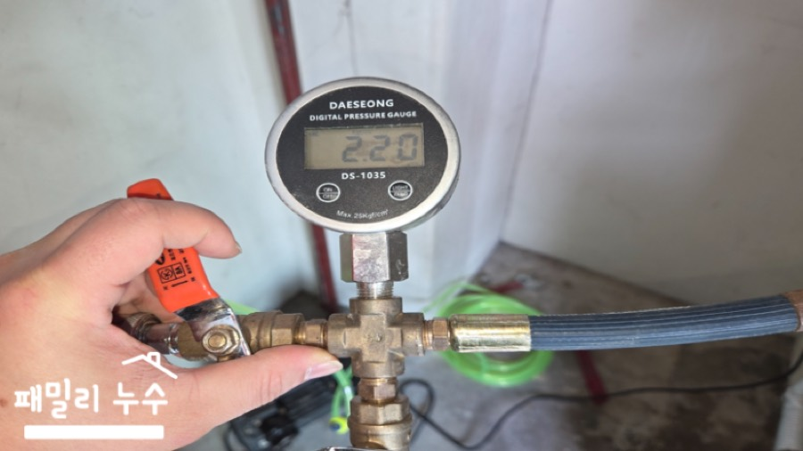
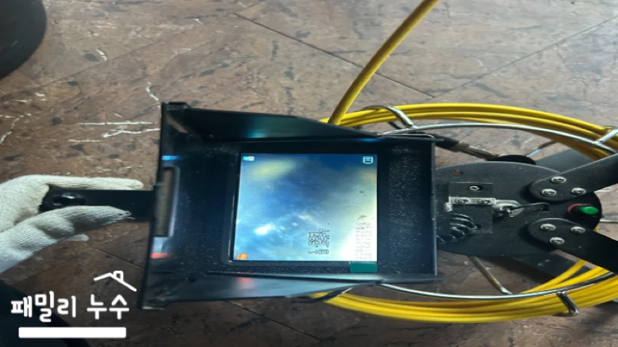
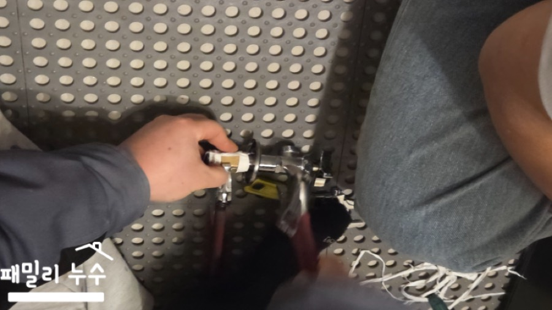
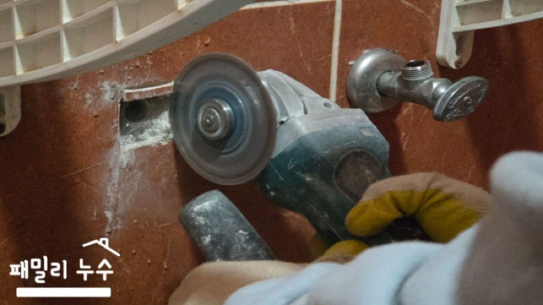
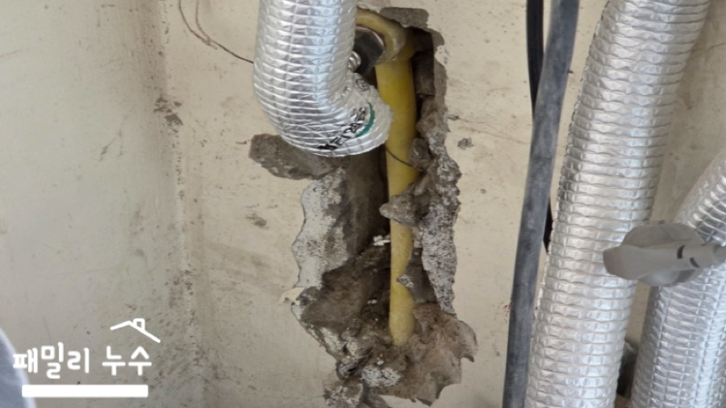
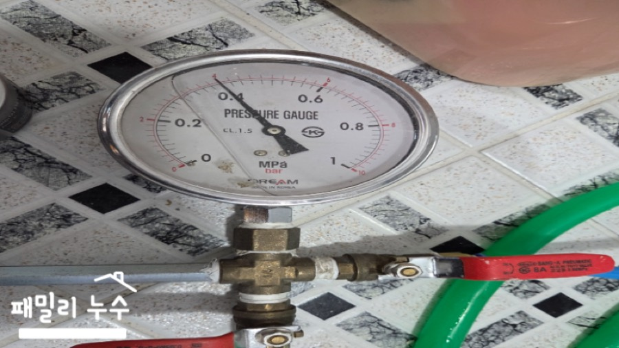
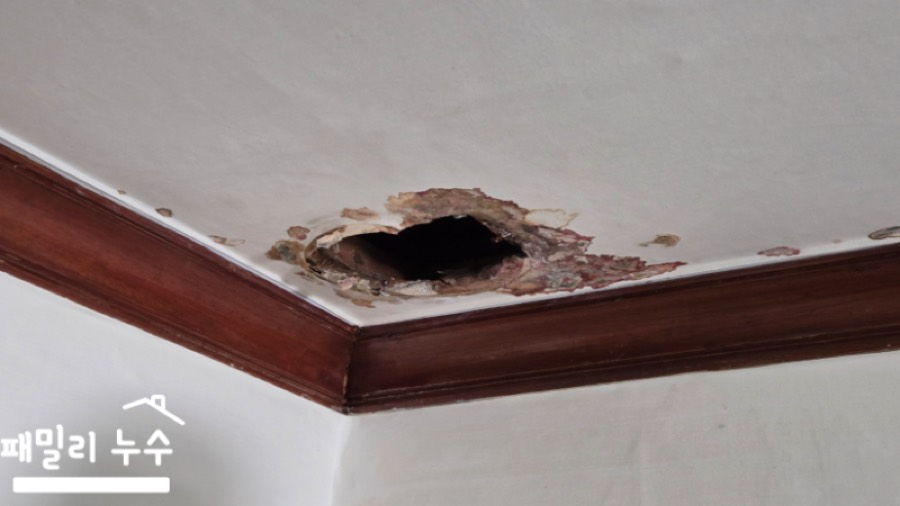
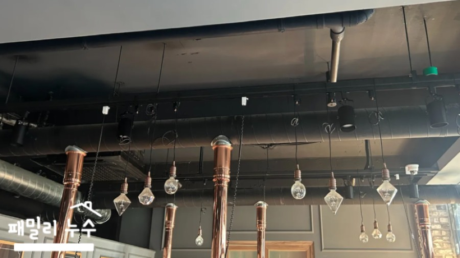
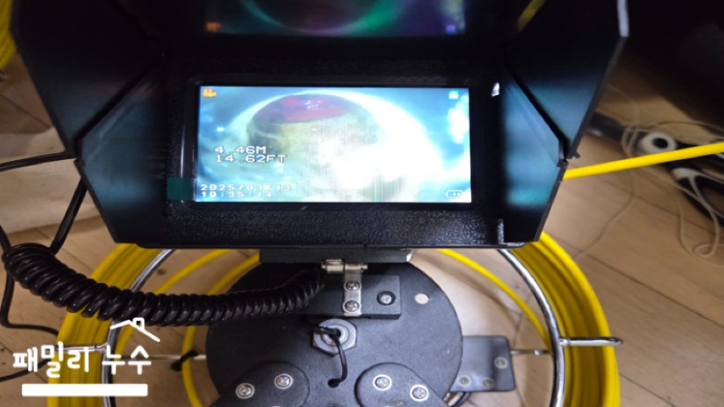

정밀 누수탐지
최신식·특허받은 장비로 벽과 바닥을 무작정 뜯지 않고 누수 위치를 좁혀 찾습니다. 아파트, 빌라, 원룸, 주택, 상가 모두 가능합니다.
진주 · 사천 누수탐지 · 하수구막힘
누수탐지와 하수구 뚫음을 둘 다 하는 업체는 흔치 않습니다. 오랜 현장 경험을 쌓은 설비 전문가가 직접 방문해 청음·가스·열화상 장비로 원인을 먼저 좁히고, 필요한 부분만 공사합니다. 시공한 곳은 A/S까지 책임집니다.
이런 증상이 있다면
누수처럼 보이는 증상이 실제로는 배수 문제인 경우도 있습니다. 둘 다 보는 업체라 원인을 한 번에 가려드립니다.
서비스
최신식·특허받은 장비로 벽과 바닥을 무작정 뜯지 않고 누수 위치를 좁혀 찾습니다. 아파트, 빌라, 원룸, 주택, 상가 모두 가능합니다.
엑셀·PP-C 배관 갈라짐, DRF 부속 누수, 우수관, 수도꼭지·부동전 교체까지 원인 부위를 바로 수리합니다.
변기, 욕조, 세면대, 화장실 육가, 베란다 오수관, 정화조 배관 막힘을 스프링·플렉스샤프트로 뚫습니다.
기름때·슬러지로 좁아진 주방 배관을 내시경으로 확인하고 깊은 구간까지 제거합니다. 필요하면 배관을 교체합니다.
굳은 기름때로 꽉 막힌 조리실·화장실 배관을 고압세척과 샤프트 작업으로 해결합니다.
탐지 방법
물 자국이 보이는 곳과 실제로 새는 곳은 다른 경우가 많습니다. 범위를 좁힌 뒤 필요한 부분만 열어야 불필요한 공사를 줄일 수 있습니다.
수도요금 변화, 물 자국이 생긴 시기, 아래층 피해 여부를 먼저 듣습니다. 사진을 문자로 보내주시면 도움이 됩니다.
수도를 모두 잠근 상태에서 계량기를 보고, 압력 테스트로 어느 배관 라인인지 구분합니다.
청음·가스·열화상 장비와 내시경으로 의심 구간을 좁혀 정확한 지점을 찾습니다.
필요한 부분만 절개해 수리하고, 작업 후 다시 점검해 마무리합니다. A/S까지 책임집니다.



현장 기록

공용 복도라 민원으로 번지기 쉬운 상황. 배수 문제인지 급수 문제인지부터 구분해 원인을 잡았습니다.

압력 테스트 → 절개 → 파손 부위 확인 → 신규 자재 연결 순서로 당일 복구했습니다.

누전 위험까지 있던 현장. 청음검사로 바닥 내부 소리를 먼저 확인해 원인을 찾았습니다.

기초·청음 검사로 잡히지 않던 현장을 다시 찾아 끝까지 원인을 찾아 해결했습니다.

일반 장비로 상부 접근이 안 되는 구조라 아래층에서 배관에 접근해 뚫었습니다.

트랩 문제가 아니라 배관 깊숙한 곳의 기름때. 플렉스샤프트로 깔끔하게 제거했습니다.
자주 묻는 질문
네. 패밀리누수설비는 누수와 배수 현장을 오래 다뤄온 설비 전문가가 누수탐지와 하수구 뚫음을 모두 합니다. 누수처럼 보이지만 실제로는 배수 문제인 경우도 많아 한 번에 함께 점검해 드립니다.
처음부터 넓게 철거하지 않습니다. 계량기·압력 점검과 탐지 장비로 위치를 좁힌 뒤 필요한 부분만 열어 수리합니다.
세탁기, 정수기, 변기 물탱크까지 집 안의 수도를 모두 멈춘 뒤 계량기 별침이 움직이는지 보세요. 계속 움직인다면 누수 가능성이 높습니다. 물 자국은 사진으로 남겨두시면 상담할 때 도움이 됩니다. 원인을 찾겠다고 벽이나 바닥을 직접 뜯는 것은 권하지 않습니다.
진주와 사천 지역을 중심으로 출장합니다. 인근 지역은 전화로 문의해 주세요.
네. 식당 조리실, 카페, 미용실, PC방, 복지센터 등 상가 현장도 많이 다녀왔습니다. 굳은 기름때는 고압세척과 샤프트 작업으로 해결합니다.
누수 위치와 배관 상태, 작업 범위에 따라 달라집니다. 전화나 문자로 증상을 알려주시면 현장 확인 전에 필요한 점검부터 안내해 드립니다.
상담 문의
수도요금 변화, 물 자국 위치, 물이 안 내려가는 곳처럼 보이는 것부터 말씀해 주세요. 사진을 문자로 보내주시면 더 빠르게 안내해 드립니다.
010-2854-1313